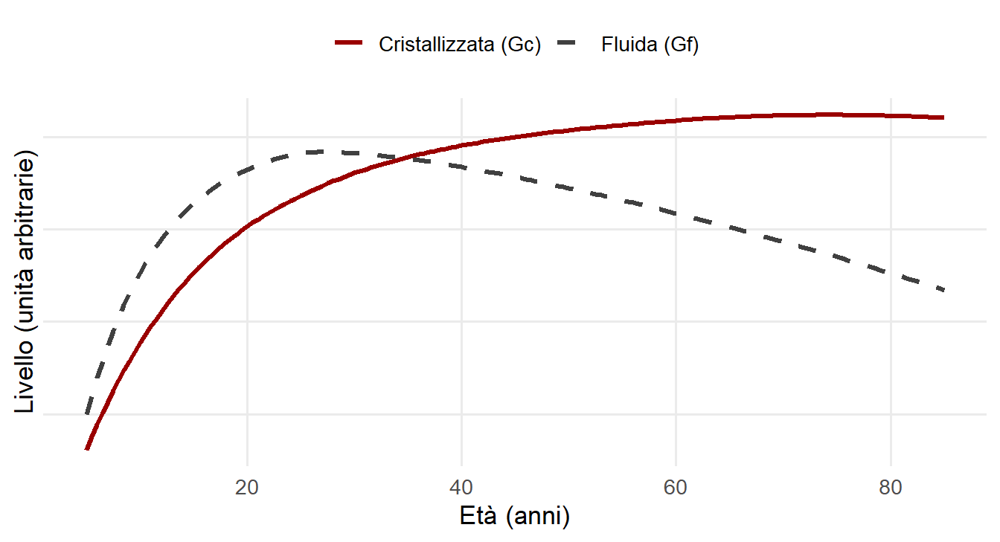
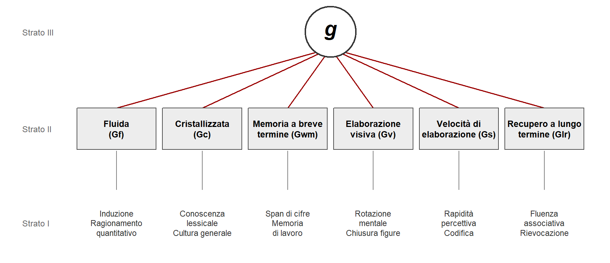

7 Abilità multiple e modelli gerarchici
Nessuno ha mai seriamente negato la positive manifold. Ciò che molti hanno negato è che la spiegazione migliore sia un fattore generale. Le prove correlano, sostengono, perché si sovrappongono: ruotare mentalmente una figura richiede anche memoria di lavoro, che a sua volta richiede velocità di elaborazione. Oppure perché l’intelligenza misurata dai test è solo una fra molte intelligenze. Oppure, in alcune teorie recenti, perché le abilità si sostengono a vicenda durante lo sviluppo.
Questo capitolo segue la storia delle alternative al fattore unico. Non è un catalogo: ogni teoria va giudicata per ciò che ha spiegato e per l’evidenza che la sostiene. Alcune hanno fallito in modo utile, altre hanno avuto più fortuna nelle aule che nei dati. Il punto d’arrivo è il modello gerarchico, oggi la sintesi più accreditata. Una sintesi che però non ha chiuso del tutto il contrasto di fondo: conta di più l’abilità generale o le abilità specifiche?
7.1 Thurstone e le abilità mentali primarie
Negli anni Trenta Louis Thurstone osservò che molti test dell’epoca erano impuri. Voti scolastici, problemi aritmetici, memoria di parole, completamento di sequenze numeriche: ciascuno mescolava diverse competenze mentali. Forse, pensò, g era un’illusione. I test sembravano diversi, ma chiamavano in causa sempre le stesse capacità di base, e per questo correlavano.
Nel 1938 propose una teoria radicalmente multicomponenziale. Il comportamento intelligente dipenderebbe da un insieme di abilità mentali primarie, teoricamente indipendenti (Thurstone, 1938). Fra queste c’erano la comprensione verbale, la fluenza verbale, il ragionamento induttivo, il calcolo numerico, la visualizzazione spaziale, la memoria e la velocità percettiva. Se si fossero costruiti test puri di ciascuna abilità, questi non sarebbero stati correlati.
Thurstone costruì quei test e affinò le tecniche dell’analisi fattoriale per analizzarli. Il risultato fu un fallimento utile: le abilità primarie risultavano correlate fra loro. Thurstone stesso finì per ammettere un fattore generale di ordine superiore. La sua teoria non è più attuale, ma ha lasciato due eredità: test di abilità specifiche ancora usati nella ricerca e l’idea che fra il fattore generale e le singole prove esista un livello intermedio.
7.2 Sternberg e Gardner: allargare il concetto
Una seconda famiglia di teorie non contesta tanto la struttura statistica quanto l’ampiezza del concetto. Robert Sternberg ha proposto una teoria triarchica con tre forme di pensiero intelligente (Sternberg, 1985). L’intelligenza analitica corrisponde grosso modo a ciò che misurano i test. L’intelligenza pratica è la capacità di adattarsi alle richieste quotidiane usando al momento giusto ciò che si è appreso. L’intelligenza creativa è la capacità di trovare soluzioni nuove.
L’enfasi sul comportamento nei contesti reali è condivisibile. Il problema è la misura. L’intelligenza analitica si misura bene ed è un ottimo predittore degli apprendimenti e un buon predittore del successo lavorativo. Le misure di intelligenza pratica e creativa si sono rivelate più difficili da costruire e, quando funzionano, correlano con l’abilità generale più di quanto la teoria preveda.
Howard Gardner ha proposto le intelligenze multiple: linguistica, logico-matematica, spaziale, musicale, corporeo-cinestesica, interpersonale, intrapersonale, a cui ne ha poi aggiunte altre (Gardner, 1983). I criteri per riconoscere un’intelligenza erano ambiziosi: basi neurobiologiche localizzabili, operazioni cognitive dedicate, una storia evolutiva plausibile, uno sviluppo descrivibile, l’esistenza di talenti o deficit selettivi. Ogni persona avrebbe una combinazione unica di intelligenze.
La teoria è molto popolare in ambito educativo. Il suo sostegno empirico è scarso. Gardner non ha sviluppato misure standardizzate delle sue intelligenze, e quando altri ricercatori le hanno costruite hanno trovato che le prove delle intelligenze più «cognitive» correlano fra loro e con g, mentre quelle musicale e corporea dipendono in parte da abilità non cognitive (Visser et al., 2006; Waterhouse, 2006). Le intelligenze multiple, poi, non hanno tutte la stessa importanza. Una scarsa abilità musicale o corporeo-cinestesica pesa poco nella vita quotidiana; una scarsa abilità logico-matematica è spesso parte di una disabilità intellettiva. Chiamare tutto «intelligenza» rende l’etichetta più inclusiva e meno informativa.
C’è poi un problema di numero. Joy Guilford arrivò a ipotizzare oltre cento abilità distinte, poi quasi duecento (Guilford, 1967). Come ha osservato Alan Kaufman, se un’abilità sola era troppo poco, centoventi sono troppe (Kaufman, 2009).
7.3 Intelligenza fluida e cristallizzata
Una distinzione proposta da Raymond Cattell ha avuto invece un successo duraturo, perché poggia su dati solidi (Cattell, 1963).
L’intelligenza fluida (Gf) è la capacità di ragionare su problemi nuovi, indipendentemente dall’istruzione, ricavando regolarità da stimoli mai visti. Si misura preferibilmente con prove non verbali, come le matrici. L’intelligenza cristallizzata (Gc) è l’insieme delle conoscenze e delle strategie acquisite, insieme alla capacità di usarle quando servono. Dipende molto dall’istruzione e si misura soprattutto con prove verbali, come il vocabolario o le domande di cultura generale.
Le due forme sono fortemente correlate. Si distinguono soprattutto per il modo in cui cambiano nel corso della vita (Figura 7.1). L’intelligenza fluida cresce rapidamente durante lo sviluppo, raggiunge il massimo nella giovane età adulta e poi declina insieme alle abilità neurocognitive generali. L’intelligenza cristallizzata continua a crescere a lungo e può aumentare anche in età avanzata, finché si accumulano esperienze (McArdle et al., 2002).
Le due forme interagiscono. Si consideri questo problema: X + Y = 200, X + Z = 240, Z + Y = 110. Chi non ha mai visto un sistema di equazioni può arrivare alla soluzione ragionando per tentativi, con un notevole impegno di intelligenza fluida. Chi conosce il metodo lo risolve in pochi passaggi. Le conoscenze cristallizzate rendono facili problemi che la sola intelligenza fluida affronterebbe con fatica. Secondo la teoria dell’investimento di Cattell, l’intelligenza fluida emerge per prima e fornisce la capacità con cui, nel tempo, si costruisce quella cristallizzata.
Cattell non pensava davvero a due intelligenze separate: era sostanzialmente un unitarista, e considerava Gf e Gc due modi in cui la stessa capacità si esprime. La sua distinzione ha però aperto la strada al passaggio dall’unitarismo iniziale al modello gerarchico.
7.4 La sintesi gerarchica
Il fallimento di Thurstone conteneva un’informazione preziosa. Prove del tutto diverse continuano a correlare, ma prove che coinvolgono materiale o processi simili correlano di più: verbale con verbale, spaziale con spaziale, memoria con memoria. Lo schema richiede almeno tre livelli: un fattore generale; fattori di dominio, che raggruppano prove simili; componenti specifiche di ogni prova.
Riprendiamo l’esempio sportivo del capitolo precedente. Oltre all’atleticità generale esistono capacità intermedie comuni a gruppi di discipline: la velocità per nuoto e ciclismo, il gioco di squadra per basket e calcetto. E restano componenti proprie di ciascuna disciplina. Un modello a più livelli è un compromesso fra teorie unitarie e multiple: il fattore generale coesiste con fattori più specifici, e solo l’insieme descrive in modo completo le differenze individuali.
Una delle prime formulazioni gerarchiche si deve a Philip Vernon, che sotto g collocava due grandi gruppi di abilità, verbali-educative e spaziali-pratiche-meccaniche (Vernon, 1950). La formulazione oggi più citata è il modello Cattell-Horn-Carroll (CHC). La sua storia combina tre contributi. Cattell introdusse la distinzione fra fluida e cristallizzata. John Horn, rifiutando il fattore generale, mostrò che con l’analisi fattoriale si potevano distinguere diversi altri domini. John Carroll, dopo aver rianalizzato centinaia di insiemi di dati, propose una sintesi a tre strati (Carroll, 1993). In seguito i modelli di Cattell-Horn e di Carroll sono stati integrati e ampliati (McGrew, 2009).

Oggi «intelligenza gerarchica» è quasi sinonimo di CHC, e le batterie moderne sono costruite o riviste per riflettere questo modello. Due precisazioni sono però doverose. Non tutti i fattori hanno la stessa importanza: intelligenza fluida e cristallizzata sono centrali, altri domini, come la conoscenza quantitativa o la lettura e scrittura, sono più periferici o dipendono molto dal contesto. E il CHC è più una tassonomia delle abilità distinguibili che una teoria di come funzionano.
7.5 Leggere una prestazione su più livelli
Che cosa significa, concretamente, che l’intelligenza è gerarchica? Che la prestazione a una prova va letta su diversi livelli contemporaneamente.
Prendiamo il punteggio di una persona in una prova di vocabolario. Riflette in parte il fattore generale; in parte l’abilità verbale, comune alle prove linguistiche; in parte la conoscenza specifica delle parole presenti nella prova. Il resto è errore: casualità, numero limitato di item, effetti transitori come una notte dormita male. Componente specifica ed errore, insieme, possono pesare per il 30–40% della varianza dei singoli subtest; l’errore da solo, con attendibilità tipiche fra 0,80 e 0,90, ne rappresenta il 10–20%. Lo stesso vale per una prova di rotazione mentale, con il dominio visuospaziale al posto di quello verbale.
7.6 La prevalenza di g
In teoria c’è ampio accordo sul modello gerarchico. In pratica, la ricerca mostra che i diversi livelli non pesano allo stesso modo.
Nelle batterie multicomponenziali il fattore generale spiega da solo la maggior parte della varianza comune ai subtest: nell’analisi della WISC-IV statunitense più di due terzi (Watkins, 2006). I fattori di dominio, al netto di g, ne spiegano poca e sono poco attendibili, come si è visto nel capitolo sulla qualità della misura (Gignac & Kretzschmar, 2017). È inoltre il fattore generale a spiegare con regolarità gli esiti della vita reale: risultati scolastici, prestazione lavorativa, salute e longevità. Ed è la componente più chiaramente ereditabile.
Questo vale per la popolazione nel suo insieme. Può non valere per individui con discrepanze molto ampie fra abilità, o in gruppi con condizioni del neurosviluppo, dove i profili di abilità sono informativi (Giofrè et al., 2017). Nella pratica clinica la gerarchia non è un dettaglio accademico: decide quanto peso dare al totale e quanto ai singoli indici.
7.7 Una sintesi ragionevole
Si può quindi rispondere alla domanda iniziale con una sintesi.
Che cos’è g? È l’insieme delle cause comuni, in buona parte ancora ignote, che fanno sì che una persona vada meglio o peggio in molte abilità cognitive diverse. Si riassume come abilità mentale generale. Moltissimi fattori genetici, ambientali e di esperienza producono un assetto neurobiologico più o meno favorevole alla prestazione cognitiva; statisticamente, il risultato si lascia riassumere da un singolo fattore. Ma g non è, ontologicamente, una cosa sola.
Come si misura? Con il QI, che aggrega le prestazioni in molte prove di tipo diverso.
Perché è importante? Perché si misura in modo affidabile, stabile e relativamente rapido, e prevede molti esiti rilevanti della vita reale, spesso rendendo superfluo l’approfondimento di questo o quel dominio specifico. Spesso, non sempre. Le abilità specifiche esistono, e in alcuni casi fanno la differenza. Ma chi vuole interpretarle deve prima fare i conti con il fattore generale.